Romênia é um país localizado no leste europeu, próximo a Hungria, Ucrânia, Maldova e Crimeia. Sua população é constituída de 19,06 milhões de habitantes, com uma estimativa de 1.000 imigrantes que adentram o país e com dimensão de 238 398 km2.
Sua capital é Bucareste, mais conhecida por sediar Palatul Parlamentului, sede do governo da era comunista e próximo a ele há um distrito reconhecido por uma movimentada vida noturna e por ser perto de uma igreja ortodoxa. O país possui sua própria língua, o romeno, e possui uma moeda de mesmo nome, o Leu Romeno que equivale a R$1,20, mais isso pode mudar já que recentemente a Romênia entrou na União Européia, ou seja, pode substituir a sua moeda pelo euro assim que comprir com todos os requisitos necessários para sua adoção.
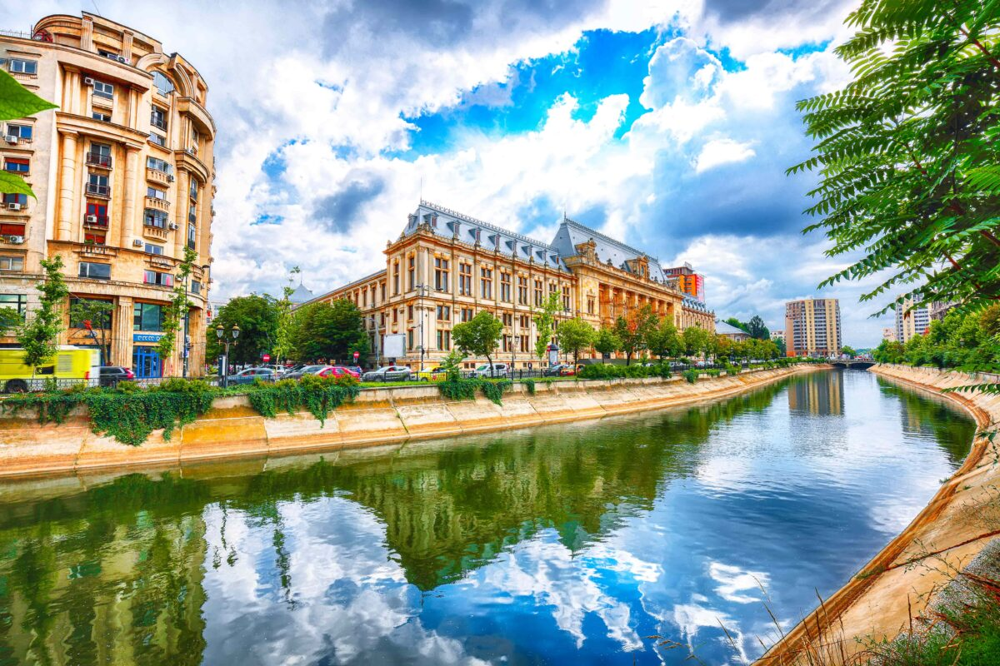A comida romena possui traços italianos, turcos, gregos, balcãs e até mesmo otomanos(que invadiram o país no passado), por isso é muito fácil se recordar de outros países ao experimentar sua gastronomia. Seus pratos são fartos e predominantemente carnívoros, com carne de porco vaca e frango além de batatas e polentas das mais variadas formas.
Muitos gastrônomos iriam dizer que o cardápio não estaria certo se não começássemos falando sobre as sopas:
Prato típico e geralmente consumido após a entrada, essa sopa é constituída de almôndegas tripas de vaca, tripas de boi e ossos da vaca, mas em algumas ocasiões, você pode comer essa sopa com legumes.
Essas sopas possuem um molho mais cremoso, como o creme de leite, com muitos vegetais e com diferentes carnes. Além disso, essa sopa possui vários tipos, todas levando o nome da cidade em que a mesma se origina.
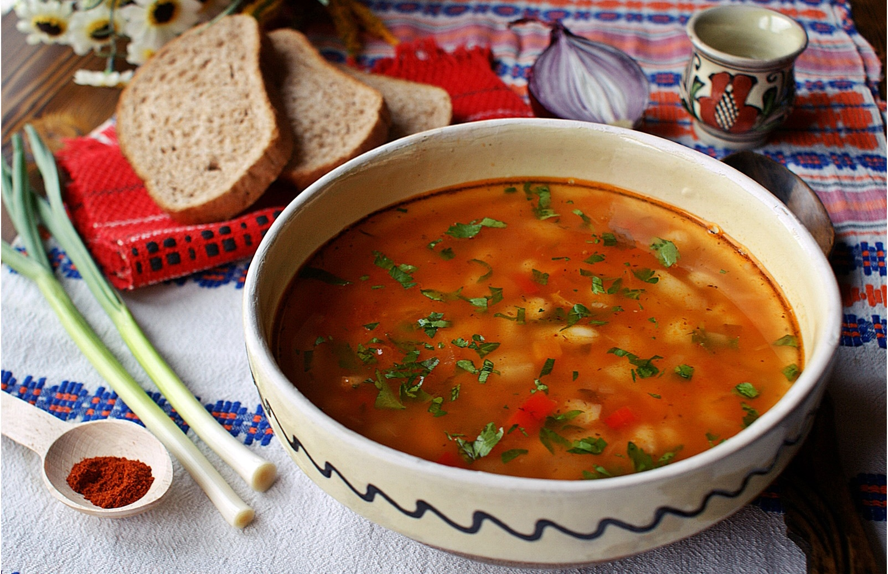Estes bolinhos de carne se assemelham aos corquetes de carne que temos em festas de aniversário mas, ao contrário do nosso, o bolinho romeno não é empanado, e é considerado milenar na cultura romena, já que o mesmo é feito em fogueiras e acompanhado de pão ou batata frita. Ele é feito por uma mistura de boi, vaca e porco além de bicarbonato de sódio e algumas especiarias locais.
Depois de adicionar todos os ingredientes, ele é enrrolado em formato de uma salsicha e deixado para descansar durante a noite.
Diz a lenda que os mitei romenos foram cozinhados pela primeira vez em Lipscani, Bucareste, por um cozinheiro que havia ficado sem salsichas e que, para satisfazer seus clientes, se limitou a enrrolar o recheio e colocar-lo diretamente na grelha.
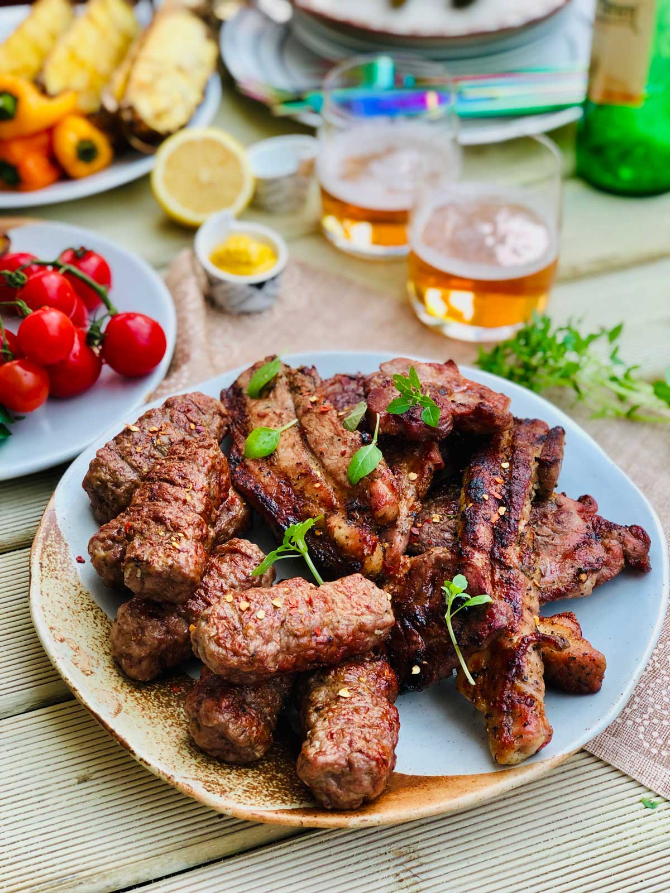Se você é daqueles que adora um doce, essa sobremesa não pode faltar na sua viagem à Romênia. O Papanaşi é composto por bolinhos fritos feitos de farinha com calda de geleia de mirtilo ou algum tipo de iogurte.
Apesar de ser a sobremesa que representa a culinária romena, ela é bem pesada e após tanta comida nas refeições, recomenda-se que seja dividida com um amigo.
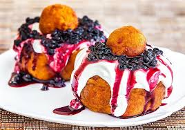Em sua maioria, os pontos turísticos da Romênia estão dentro de Bucareste, que é a capital do país. Mas os castelos utilizados em livros (como o livro do Drácula), ou os que fazem parte da história do país estão localizados mais para o interior.
Símbolo da megalomania e dos delírios de grandeza do ditador Ceausescu, o Palácio do Parlamento de Bucareste é a segunda maior construção do mundo, superada apenas pelo edifício do Pentágono.
Este edifício foi construído após um terremoto que ocorreu no país em 1977. Os prós foi que essa é a maior construção do mundo com 365.000 metros e com 1.100 quartos, mas os contras, é que com sua construção, o presidente Ceausescu colocou o país em uma grande dívida, mergulhando o seu povo na miséria. Além disso, Ceausescu não duvidou em momento algum em demolir as diferentes zonas históricas da cidade que atrapalhavam os seus planos. Por isso, diversos templos, hospitais e fábricas foram destruídos, além de residências de mais de 40.000 pessoas que perderam os seus bens e foram obrigadas a se mudar.
.jpg)
A Transilvânia é uma região situada no centro da Romênia, conhecida por cidades medievais, fronteiras montanhosas e castelos como o Castelo de Bran, uma fortaleza gótica associada à lenda do Drácula. A cidade de Brașov tem muralhas e baluartes saxões, bem como a imensa Praça do Conselho, rodeada por edifícios barrocos coloridos, a imponente Igreja Negra, em estilo gótico, e cafés.
Transilvânia significa “além da floresta” e recebeu esse nome por ser uma região montanhosa na parte centro-norte da Romênia, perto de sua capital Bucareste, que é composta por cidades como Sinaia, Brasov, Sibiu e Sighișoara, que ainda conserva ares medievais e passa a impressão de que parou no tempo.
O homem que é conhecido mundo a fora como o maior dos vampiros, o Conde Drácula, dentro da Romênia, é visto como um patriota e herói. O príncipe Vlad III viveu até 1476 e foi uma figura essencial na luta contra os turcos. Sua fama tem origem nas mãos de ferro com que punia as pessoas. O seu principal meio de execução era a empalação, que lhe rendeu o nome de Vlad, o Empalador.
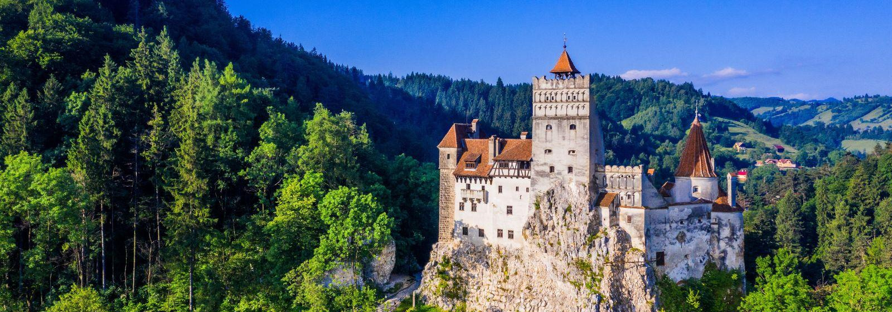Também conhecida como Hermanstadt em alemão, Sibiu foi uma cidadela construída pelos saxões alemães no século XII, que rapidamente se tornou num importante entreposto comercial.
Sibiu foi uma das sete cidadelas fortificadas construídas pelos saxões da Transilvânia na Idade Média. Capital Europeia da Cultura em 2007, Sibi nos surpreende com uma fusão de formas de arte tradicionais e contemporâneas, praças idílicas e exemplos arquitectónicos.
.jpg)
É uma cidade encantadora, colorida, rodeada pelos belos bosques dos Montes Cárpatos. Também é uma cidade alto astral e boêmia, com diversas lojas, bares e restaurantes.
Fundada em 1211 por cavaleiros da Ordem Teutônica, Brasov foi colonizada pelos saxões e logo se tornou uma das sete cidadelas muradas da Transilvânia. Por causa da sua localização estratégica, a cidade prosperou, cresceu e se tornou controlada por torres de entrada e saída. Muito desse passado ainda pode ser visto nas ruas, nas edificações e nas calçadas de pedra do centro histórico da cidade.
Brasov (pronuncia-se Brashov), fica a pouco mais de 160 quilômetros de Bucareste, capital da Romênia, na região da Transilvânia. Tem em torno de 300 mil habitantes, está ao pé dos Montes Cárpatos e é uma das cidades mais visitadas do país.
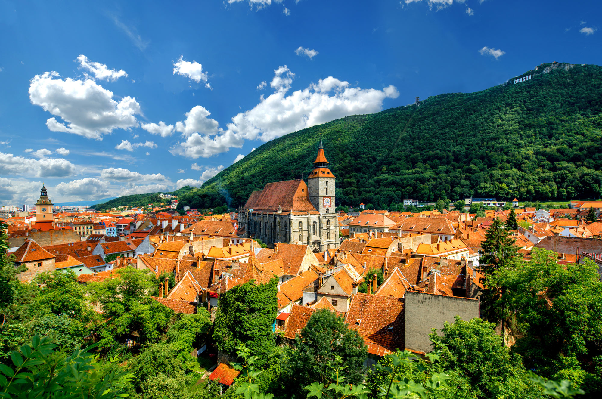O verão europeu é uma ótima temporada para quem quer curtir um evento de qualidade com aquela vibe gostosa. É nessa temporada que rola o Neversea, na pitoresca cidade costeira de Constanța.
O evento apresenta durante 3 dias uma programação diversificada com sonoridades da EDM, pop e urbano. O Neversea atrai artistas e público da região e também nomes internacionais.
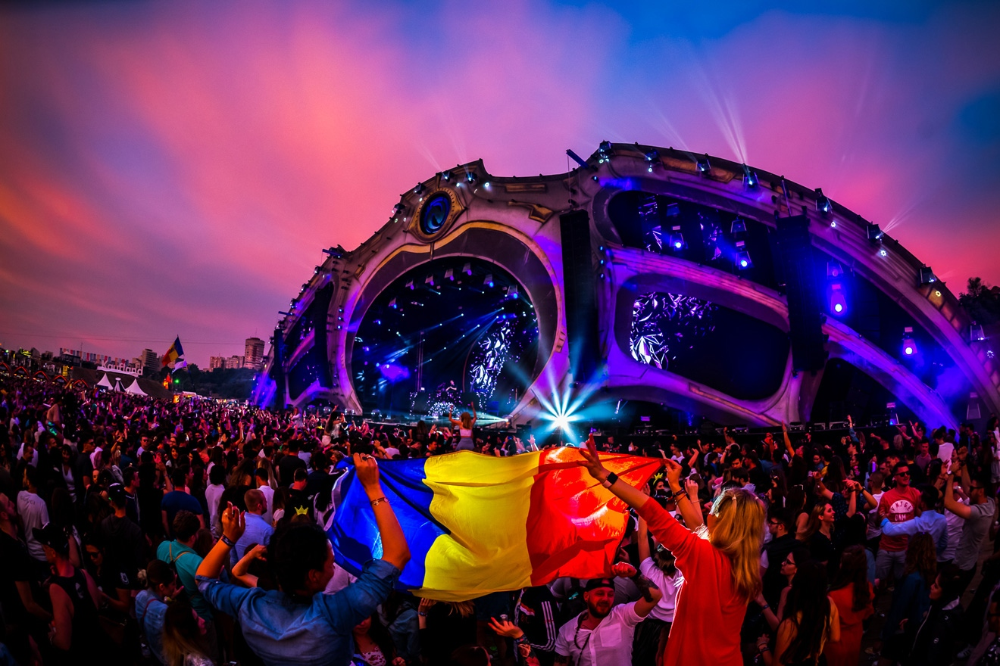O festival acontece na cidade de Bucareste, a capital da Romênia. A localização escolhida é cuidadosamente selecionada para proporcionar um ambiente adequado para a grandeza do evento. Este ano o evento rolou do dia 23 a 25 de junho, e entre as atrações estavam os brasileiros Vintage Culture e Mochakk.
O SAGA apresenta uma variedade de gêneros de música eletrônica, incluindo EDM (Eletronic Dance Music), house, techno e trance. Os organizadores se esforçam para trazer alguns dos melhores artistas nacionais e internacionais da cena eletrônica para os palcos do evento.
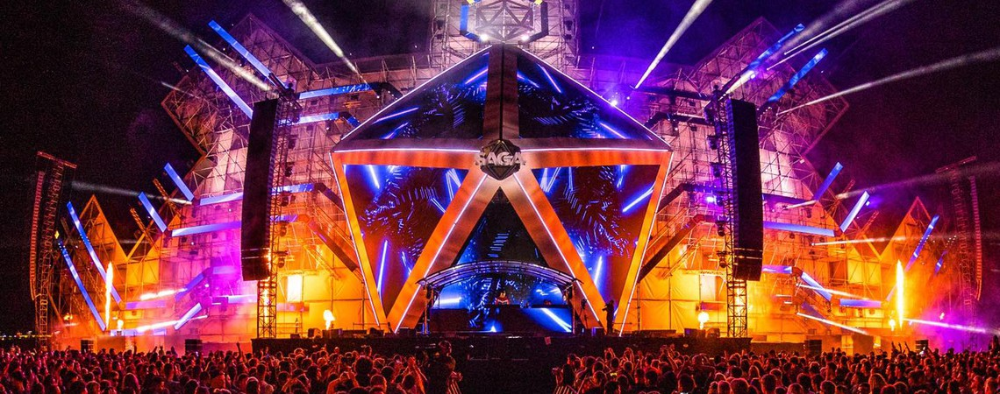Com sete espaços musicais, o Nostalgia acontece em Bucareste, capital da Romênia. Com uma atmosfera intimista e acolhedora, o festival geralmente tem sua capacidade limitada, permitindo que os participantes desfrutem de apresentações mais próximas e interajam com os artistas de uma maneira mais pessoal, promovendo uma conexão singular.
Além da música, o Nostalgia Festival oferece uma variedade de experiências interativas e atividades temáticas para o público. Isso inclui áreas de descanso, exposições de arte, workshops de dança, lounges temáticos e muito mais. Tudo isso proporciona uma dimensão extra ao evento, permitindo que a galera mergulhe ainda mais na atmosfera nostálgica e enriqueça sua experiência.
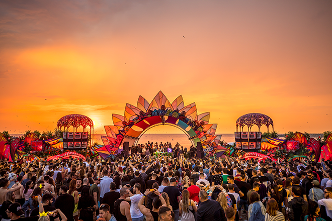Este ano, está na oitava edição e reunirá mais de 250 artistas internacionais e locais, entre os dias 3 a 6 de agosto, em Cluj-Arena.
Por lá já passaram vários dos principais nomes do globo, entre eles Avicii, David Guetta, Armin van Buuren, Hardwell, Tiësto, Diplo, Solomun, Nina Kraviz, Jamie Jones, Tale Of Us e Sven Väth, além dos brasileiros Vintage Culture e Alok.
Com oito palcos, o evento oferece uma diversidade musical que vai além da eletrônica e um dos diferenciais é o espaço destinado a live acts ou bandas. O UNTOLD também impressiona pelas decorações, luzes, fogos, projeções audiovisuais e é conhecido como a capital mundial da noite e da magia. O festival tem levado o coração da Transilvânia para o mundo e mostrado que a Romênia é muito mais do que a casa do vampiro mais famoso da ficção, o Conde Drácula.
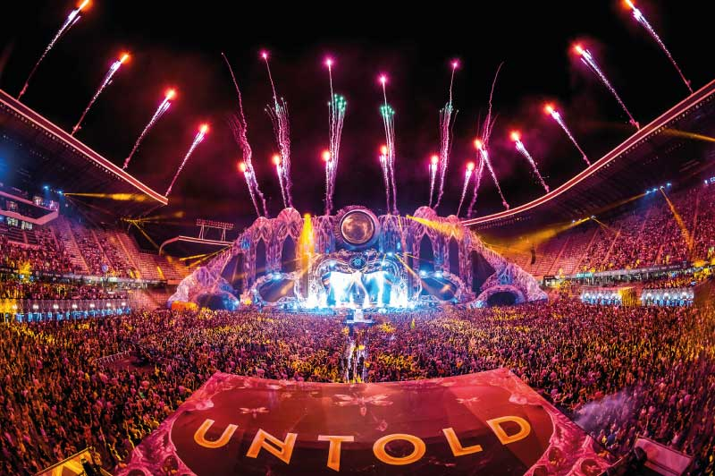Apesar de ter o tão famoso drácula como oprotagonista das lendas da Transilvânia, o país possuimuitas lendas bizarras que valem a pena saber sobre!
Também conhecida como a Julieta da Transilvânia, é mais uma história de amor com final trágico. Gârbova é uma pequena colônia romena da Transilvânia, com menos de três mil habitantes, e vê a história ser contada de geração a outra. A narrativa fala de uma moça, filha de um rico e poderoso homem, que se apaixonou por um pobre rapaz. O garoto saiu da aldeia e a menina foi obrigada a casar-se com outro, de quem não gostava. Ao entrar na Igreja, enfraqueceu e morreu, transformando o buquê em uma cruz.
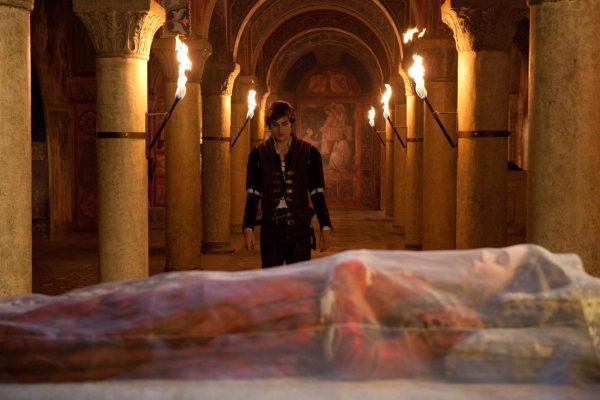Na mitologia romena, os Strigois são seres vivos ou mortos (no qual muitos atribuem o termo Vampiro a este ser). No caso de a pessoa estar viva e seja acometida de uma maldição, ou caso morra com sua consciência atormentada, ela terá a capacidade de voltar do além-túmulo e se tornar um Strigoi.
Algumas das propriedades dos Strigois incluem: A capacidade de se transformar em um animal, a invisibilidade e a propensão a drenar a vitalidade das vítimas através da perda de sangue.
Os Strigois também são conhecidos como vampiros imortais por terem características peculiares descritas na Torá judaica.
Este nome " Strigoi " (forma singular), tem sua origem da palavra striga, que em romeno significava " gritar " ou " coruja de celeiro " e descendente da palavra latina strix, para coruja. O que remete a associação com Lilith na bíblia judaica, citada como a primeira mulher de Adão, mas no novo testamento ela só é citada como uma coruja.
Entretanto, este ser pode ser dividido em duas classes, o Strigoi "vivo" é uma bruxa vampírica viva e o Strigoi "orto" é um morto-vivo que é frequentemente associado a vampiros.
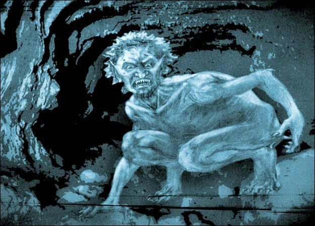Essa história se passa em Hamelin, que era uma cidade cheia de ratos, onde um flautista misterioso ofereceu para livras a cidade de seu problema e a cidade concordou com sua ajuda.
Por meio da música, o flautista expulsou os ratos da cidade, mas ao invés de agradecer o músico, a população negou dar um pagamento a ele, o deixando zangado, saindo das cidade jurando justiça.
Naquele mesmo ano, o flautista retornou e levou os filhos dos moradores da mesma forma que ele fez com os ratos, com a flauta, deixando as crianças em Koppen. Porém, três criânças foram deixadas para trás, e o motivo era porque uma era cega, não podendo ver para onde deveria ir, a outra era manca, não podendo se locomover direito e a últi,a era surda, não podendo escutar a música. Atualmente, a rua onde as crianças foram deixadas se chama Bugelosenstrasse ( Rua sem barulho) já que não se pode tocar música ou dançar.
Esta lenda também é contado na Alemanha, mas ambos os países ( Alemanha e Romênia) a contam, tendo uma "briga" sobre quem é o verdadeiro dono da história.
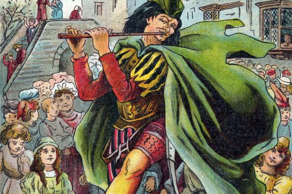Além de ser um país rico em cultura e sede de várias historias de terror, a Romênia também é conhecida por possuir várias músicas famosas que faz sucesso nas redes sociais, que são escutadas até mesmo aqui em nosso país!
Lançada em 2004, a faixa é cantada em romeno e se destaca por seu refrão cativante e melodia alegre, que rapidamente se espalhou pelas pistas de dança e rádios de todo o mundo. A letra da música, embora possa parecer enigmática para quem não fala romeno, fala sobre um amor não correspondido e a dor da separação.
O cantor Latino fez uma versão da música em português, Festa no Apê, que foi um dos grandes hits brasileiros em 2005.
A música fala sobre a diversidade culturale das diferentes etinias do país, reforçando o sentimento de pertencimento e celebração de sua herança cultural.
Com um ritmo dançante e uma batida contagiante típica do estilo dance/electro-pop, a letra da música transmite uma mensagem de empoderamento e autoconfiança, especialmente na maneira como a mulher se apresenta e se sente livre para expressar seus sentimentos e desejos.